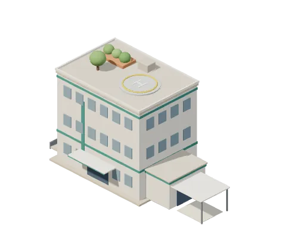
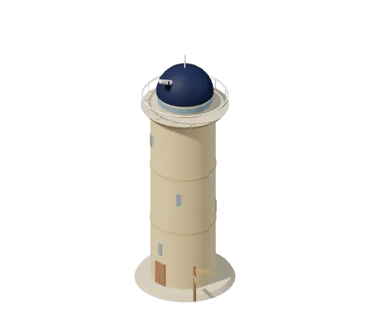
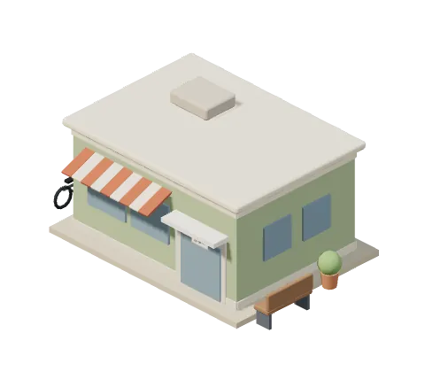
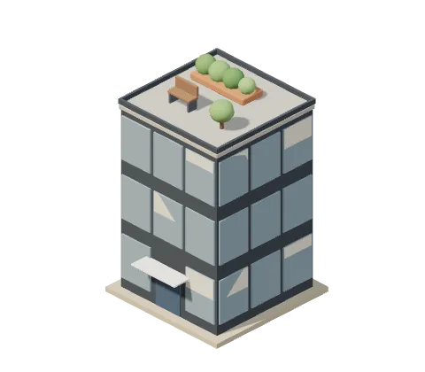
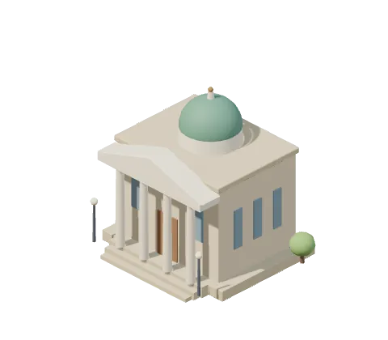
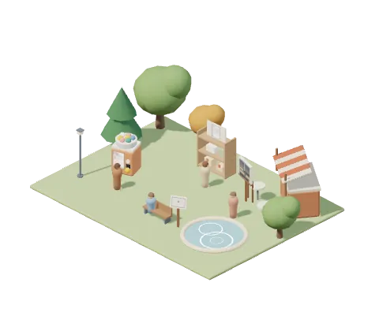
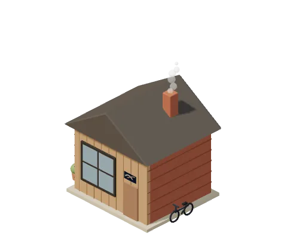
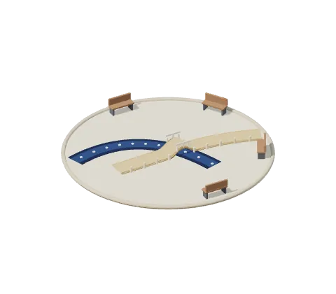
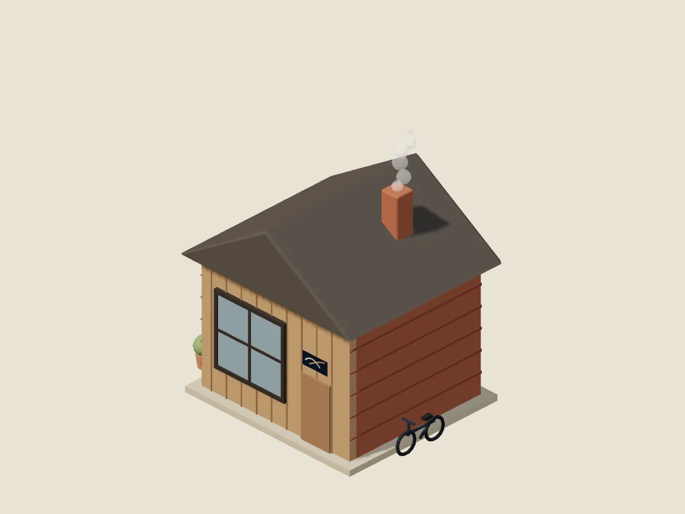
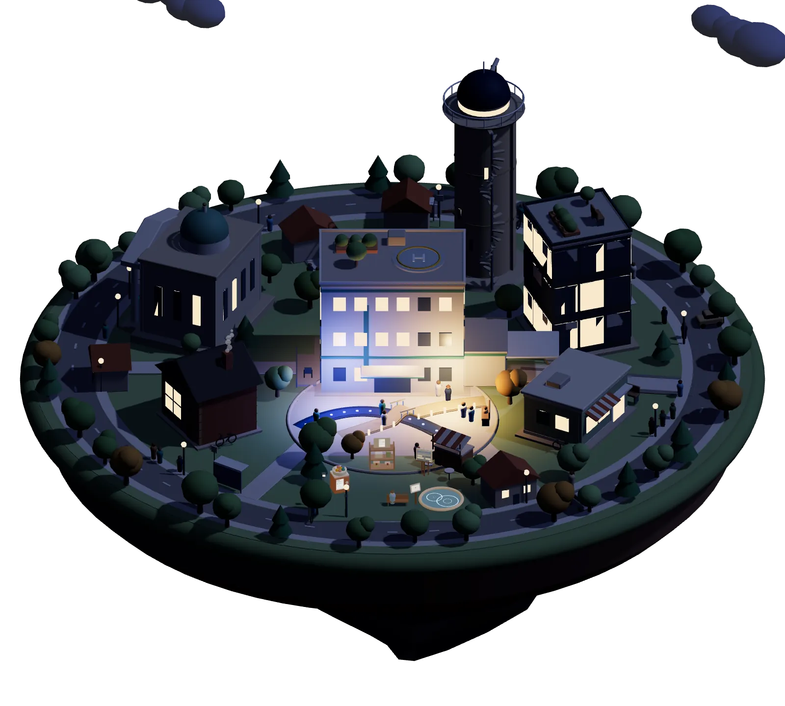

医療職のための、道具と経営ゲーム
病院の外にも、町がある
真ん中に、いつもの職場の病院。まわりに、まだ行ったことのない仕事の建物があります。
建物にふれると、中がひらきます
町の案内
-

病院いつもの職場
明日の業務を楽にする
-

展望台キャリアの地図
キャリア・経験を整理する
- BRIDGE Compass10の質問で、これまでの経験を別の言葉に翻訳する ・ 10の質問・約3分・登録不要
- 経験の棚卸し18の質問で、職務経歴書のたねをつくる
- 現場のことば 言いかえ帳現場のことばを、履歴書で通じる言葉に
- 職場モヤモヤ診断職場の「なんとなくしんどい」を、10問で言葉に
- 現場のカルテ職場のしんどさを、カルテの形で読む
- キャリアログ更新休止日々の仕事と学びを記録して、キャリアの言葉に
- Growth OS仕事の記録を、企画や発信のたねに
-

クリニック経営を学ぶ
医療経営を学ぶ
- クリニックタウン3Dクリニック経営を、1日ずつ動かして学ぶ
- ターンアラウンド12赤字クリニックを、12週で立て直す
- クリニックPMIクエスト承継直後の30日を、10問で診断する
-

事務所経営・管理
経営・管理の実務に使う
- RehaBoardリハ部門の運営を、1画面に ・ 紹介とデモ
- MedBoard外来の患者フローを、2施設で見比べる ・ 紹介とデモ
- HireBoard医療機関の採用を、カンバンで追う ・ 紹介とデモ
- 面接官の手帖面接の質問を用意し、事実と印象を分けて記録する
- ConsultSim1診と2診で、待ち時間がどう変わるかを試す ・ 紹介とデモ
- 本部長の巡回手帖複数施設の巡回を、1冊の手帖に
- 医療管理職スターター初めて管理職になった人の、チェックリストと記入式シート
- 医療管理実務ライブラリ医療管理の実務手順と、無料テンプレート
- Reha Checklist(別のサイト)リハ部門KPIのチェックリスト(PDF・スプレッドシート) ・ 配布ページ(別のサイト)・メールアドレスの登録が必要
-

図書館学習
学習を続ける
- HIM Quiz診療情報管理士の模擬試験、全12章・360問
- StudyBoard複数科目の学習を、1枚のボードで続ける
- Daily English瞬間英作文を、通勤の合間に
-

公園試す・作品
気軽に試す・作品を楽しむ
-

アトリエ運営者
理学療法士の橋本渉が、ひとりで運営しています
- 運営者について名前の由来と、これまでの歩み
- 話をする共感も、異論も、相談も
- note(別のサイト)書いていること ・ 別のサイト
-

広場考え方
正解を与えるのではなく、選択肢を増やす
- 考え方BRIDGE が何を大切にしているか

